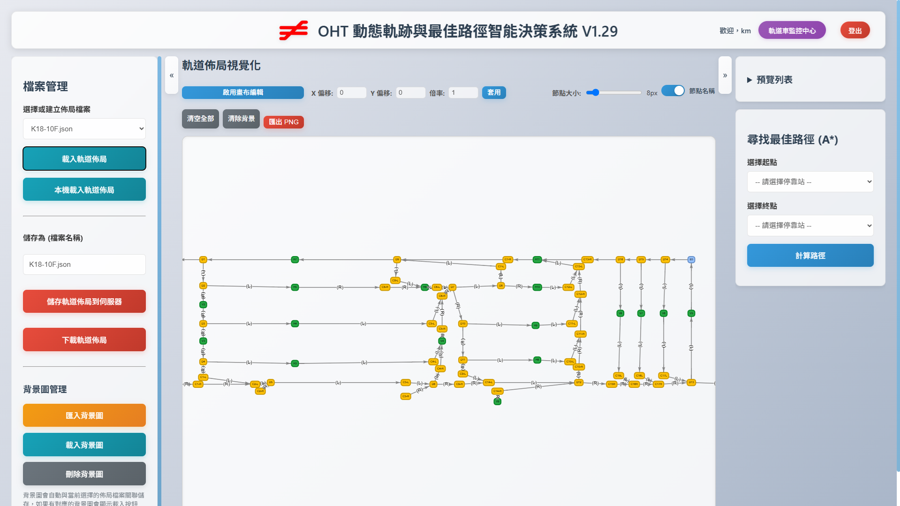

Traditional OHT systems often face efficiency bottlenecks during implementation and maintenance due to rigid path planning. This project aims to revolutionize the underlying pathfinding algorithm, addressing the performance waste and poor scalability caused by pre-calculating all possible path combinations in legacy systems. This allows system integrators to quickly complete and modify production line layouts, thereby accelerating project implementation timelines and reducing long-term maintenance costs.
This system replaces the traditional linear database with a mesh topology map (in JSON format) and incorporates the A* algorithm to create a dynamic planning engine capable of calculating the optimal path in real-time. This change maximizes the speed of OHT station layout construction and upgrades the system architecture from a "static, fixed path" to a "dynamic, flexible intelligent network," providing a good solution for complex and ever-changing production environments.
- Flexible graphical path editor
- Dynamic A* pathfinding
- Route weighting configuration
- Eliminates traditional SQL-based path storage

C:\PROJECTS\OHT_LAYOUT_SYSTEM> cd ..